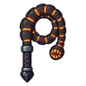

หนอนลาวา
มอนธาตุไฟ Lv 84–99
เจอที่
| แมพ | โซน | Lv | ภูมิภาค |
|---|---|---|---|
| ปล่องภูเขาไฟ ชั้น 1 | 84–90 | แดนใต้สีแดง | |
| ปล่องภูเขาไฟ ชั้น 2 · ถ้ำมังกร | 94–99 | แดนใต้สีแดง | |
| หอดาวร่วง | ชั้นหอดาวร่วง | 89–99 |
ค่าสถานะตามเลเวล
| Lv | HP | ATK | DEF | MDEF | EXP | Job |
|---|---|---|---|---|---|---|
| 84 | 69,368 | 209–313 | 50 | 13 | 123 | 92 |
| 91 | 87,689 | 233–349 | 55 | 14 | 132 | 99 |
| 99 | 109,656 | 269–403 | 59 | 15 | 143 | 107 |
ตีด้วยธาตุไหนดี
แรงขึ้น: น้ำ ×1.5 พิษ ×1.25
เบาลง: ดิน ×0.5 ไฟ ×0.25
วัตถุดิบที่ดรอป
| ของ | โอกาส | |
|---|---|---|
| เกล็ดหินหนอนลาวา | 50% | 1 ชิ้น (15% ได้ 2) |
อุปกรณ์ที่ดรอป (7)
| ของ | โอกาส |
|---|---|
| 0.25% | |
| 0.25% | |
| 0.25% | |
| 0.25% | |
| 0.25% | |
| 0.25% | |
 แส้หนอนลาวา | 0.12% |
สกิล
ทุบพื้น (Lv 25+) · ทุบพื้น (Lv 60+) · ร่างแข็ง (Lv 60+)